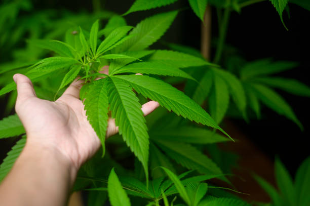

News
Cannabis Benefits in Fitness Routines
Athletes Incorporating Cannabis Interviews
Cannabis Health Wellness Fitness Community
About Us
Cannabis Podcast 101
What is the relationship between cannabis and fitness?
May 31, 2024
Cannabis and fitness may seem like an unlikely pair, but there is actually a complex relationship between the two that has gained attention in recent years.. While cannabis is often associated with relaxation and even laziness, it also has potential benefits for those who are looking to enhance their fitness routine.
One of the main ways in which cannabis can impact fitness is through its ability to reduce pain and inflammation.
What is the impact of CBD on athletic performance?
May 31, 2024
CBD, or cannabidiol, has been gaining popularity in the athletic community for its potential impact on performance and recovery.. This non-psychoactive compound found in cannabis plants has been shown to have anti-inflammatory properties and may help reduce pain and muscle soreness.
Many athletes are turning to CBD as a natural alternative to traditional pain medications and anti-inflammatory drugs.
What is the role of THC in recovery for athletes?
May 31, 2024
THC, or tetrahydrocannabinol, is a chemical compound found in marijuana that has gained attention for its potential role in aiding recovery for athletes.. While THC is most commonly known for its psychoactive properties, research suggests it may also have therapeutic benefits when it comes to athletic recovery.
One of the main ways in which THC can aid athletes in their recovery is through its ability to reduce inflammation and pain.
What is the best way to incorporate cannabis into a fitness routine?
May 31, 2024
Incorporating cannabis into a fitness routine can be a controversial topic, but for many individuals, it has proven to be a beneficial addition.. The key is finding a balance that works for you and enhances your workout experience without hindering your progress.
One of the best ways to incorporate cannabis into your fitness routine is through microdosing.
What is the science behind using cannabis for muscle recovery?
May 31, 2024
Cannabis has long been used for various medicinal purposes, but in recent years, there has been a growing interest in its potential benefits for muscle recovery.. The science behind using cannabis for muscle recovery lies in its ability to reduce inflammation and alleviate pain.
One of the main compounds found in cannabis that is believed to be responsible for its therapeutic effects is cannabidiol (CBD).
How to Enhance Your Workout with Cannabis: Fitness Podcast Reveals the Secrets
May 31, 2024
Are you looking to take your workouts to the next level?. Have you considered incorporating cannabis into your fitness routine?

Discover the Ultimate Fitness Hacks with Cannabis on This Must-Listen Podcast
May 31, 2024
Are you looking to take your fitness routine to the next level?. Have you ever considered incorporating cannabis into your workouts?
Unleash Your Full Potential: Learn How Cannabis Can Elevate Your Fitness Routine
May 31, 2024
Unleashing your full potential is a goal that many of us strive for in every aspect of our lives.. Whether it's in our careers, relationships, or personal growth, the desire to be the best version of ourselves is a common thread that binds us all.
Get Fit and Stay High: The Ultimate Guide to Integrating Cannabis into Your Workout
May 31, 2024
In today's world, the conversation around cannabis and its integration into our daily lives has evolved significantly.. No longer just a substance for recreational use, cannabis is now being explored for its potential benefits in enhancing our health and wellness routines.
Unlock the Power of Plant Medicine: Transform Your Fitness Regimen with Cannabis
May 31, 2024
In recent years, there has been a growing interest in the power of plant medicine to enhance various aspects of our lives.. One area where plant medicine is making a significant impact is in the realm of fitness and exercise.
The benefits of incorporating cannabis into a fitness routine
May 31, 2024
Incorporating cannabis into a fitness routine can provide numerous benefits for both the mind and body.. While some may have reservations about using cannabis in conjunction with exercise, research has shown that when used responsibly, it can actually enhance the overall fitness experience.
One of the main benefits of incorporating cannabis into a fitness routine is its ability to help reduce inflammation and pain.
Interviews with athletes and fitness enthusiasts who use cannabis as part of their regimen
May 31, 2024
As society's views on cannabis continue to evolve, more and more athletes and fitness enthusiasts are turning to this natural plant as part of their wellness regimen.. Through a series of interviews with individuals who incorporate cannabis into their daily routine, we gain insight into the benefits and challenges of using this controversial substance in the world of sports and fitness.
One common theme that emerges from these interviews is the role that cannabis plays in recovery.
Tips for using cannabis products for recovery and pain management after workouts
May 31, 2024
Cannabis products have gained popularity in recent years as a natural alternative for recovery and pain management after intense workouts.. Whether you are a seasoned athlete or just starting out on your fitness journey, incorporating cannabis products into your post-workout routine can provide numerous benefits.
One of the most common uses for cannabis products in recovery is its ability to reduce inflammation.
Exploring the science behind how cannabis can enhance performance and endurance in exercise
May 31, 2024
Exploring the science behind how cannabis can enhance performance and endurance in exercise is a topic that has gained significant attention in recent years.. With the growing acceptance and legalization of cannabis, researchers are beginning to uncover the potential benefits of incorporating this plant into fitness routines.
One of the key ways that cannabis can enhance performance and endurance in exercise is through its ability to reduce pain and inflammation.
Discussing the stigma surrounding cannabis use in the fitness community and ways to break down barriers
May 31, 2024
Cannabis use has long been stigmatized in society, with many people viewing it as a harmful drug that can lead to laziness and lack of productivity.. This stigma is particularly prevalent in the fitness community, where there is a strong emphasis on health and wellness.
However, recent research has shown that cannabis can have various benefits for physical and mental health, including pain relief, improved sleep, and reduced anxiety.